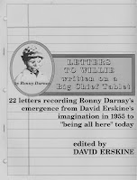
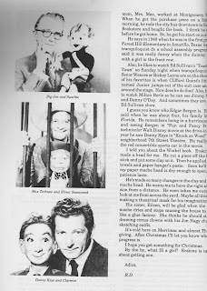

Letters To Willie
6/1/2010
{kind=link}

Letters To Willie written on a Big Chielf Tablet. This is a totally unique and fascinating book written in letter format by a ventriloquist figure, Ronny Darnay, covering a period of 33 years. As I've worked on them in my shop, I've often wished dummies could tell me their story. Well, here's one that did just that. (With some assistance by his ventriloquist partner, David Erskine.) The following is an excerpt from letter #2, written in 1955:
" I told you about the Winkel (Winchell) book. Erskine has made a head for me. He cut a piece off the broom stick and put some clay on it. Then he applied paper towels and paper hanger's paste. Soon he'll think my paper mache head is dry enough to open, if his patience lasts.
"He's made so many changes in the clay and the paper mache. He wants me to have the right expression from a distance. He even takes me outside to look at me from across the yard. Maybe all this is his making a theatrical mask for his imagination.
"His sister, Eileen, will be glad when the paper mache dries and stops causing the house to smell like a glue factory. She thinks he should stick to drawing circus clowns with his Jon Nagy charcoal sketching outfit.
"It's cold here on Merrimac and almost Thanksgiving. After Christmas I'll let you know what my progress is. I hope you get something for Christmas. By the way, what IS a girl? Erskine is talking about getting one."
* * * * * *
17 pages of insightful, entertaining reading covering the emergence and career of a successful ventriloquist, as told by his figure. And photos, too. I've drawn Jim Mauer's name today to receive a free copy of this book. Enjoy!
{kind=link}

(Contact Mr D to confirm your address and claim your prize.)Photos on page 2 of
Letters To Willie (top to bottom):
Big Jon and Sparky,
Max Terhune and Elmer Sneezweed,
Danny Kaye and Clarence.